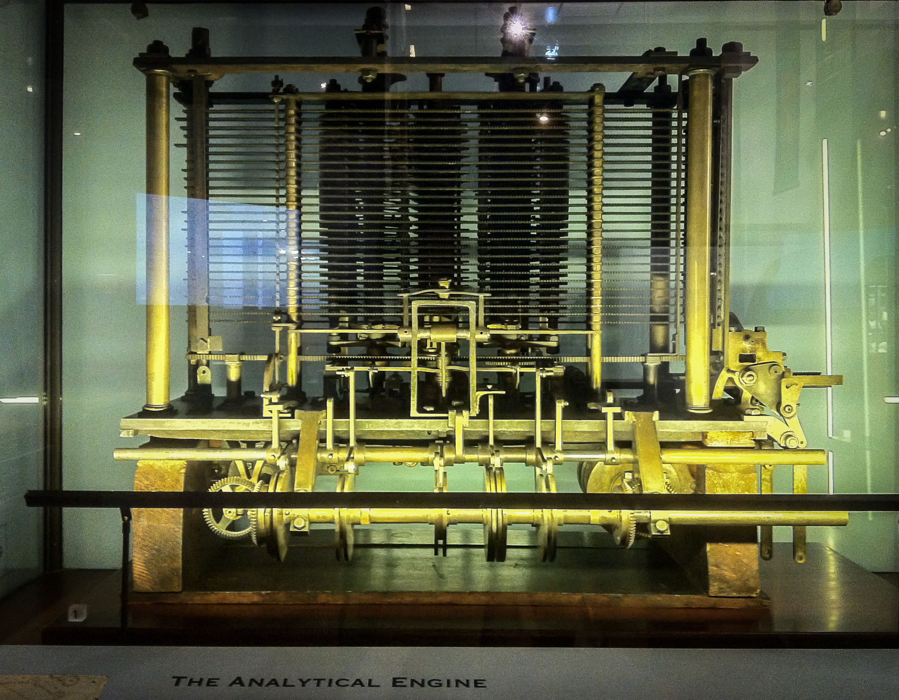

Charles Babbage (1791-1871)
Coined “The father of the computer” after his invention of two computational machines: the ‘Difference Engine’ and the ‘Analytical Engine’. Charles Babbage was born in 1791 in South London (Science Museum Group Collection, 2022). He showed academic excellence at a young age and went on to study mathematics at Cambridge, graduating in 1814.
Babbage’s knowledge spanned a substantial number of subjects; however, it was his love astronomy that drove him to speculate building a mechanical computation device that would be able to assist with his work in the field. He first managed to build a small calculating machine in 1822 that could compute square and quadratic equations. The triumph of creating such a machine secured him funding from the government to continue his work on a new a more ambitious project.
The Difference Engine

In 1823 Babbage began work on the ‘Difference Engine’, this was to be a machine that could automate the production of specific sets of mathematical tables, such as astronomical and tide tables (Stanford Encyclopaedia of Philosophy, 2020). As well as being able to produce these tables, the machine would be able to store data temporarily for later processing (Britannica, 2020). Despite the unrivalled ambition of the invention at the time, if we were to compare the machine to something that exists in the modern day, it would be no more sophisticated than a simple calculator (Rhodes, 2022). Unfortunately, due to a dispute between Babbage and the lead engineer the construction of the machine was never completed. However, it wasn’t long until Babbage turned his attention to a more ambitious project once again; ‘The Analytical Engine’.
The Analytical Engine
The ambition for the ‘Analytical Engine’ was for it to be a general-purpose computational device that would be able to carry out more than a single type of computation (as was the case with the difference engine). The new machine would be able to accept data and run operations in sequence (programmable), it would also be able to store information and even print out results. It is fair to say the project was far ahead of its time but once again due to falling out with the chief engineer and financial constraints the construction was never completed (Weber, 2000). However, the plans of an automated computational device that could guide itself through a series of operations automatically would foreshadow computer programs and go on to inspire the first generation of computer scientists.
How important is he to the field of Computer Science?
“Thus came into being the idea of automatic computation – performing computations without human intervention and intellectual tradition that eventually gave birth to brand new and very curious scientific discipline that, during the late 1960s, came to be called computer science.” (Dasgupta, 2014)
To correctly investigate the relationship between Babbage’s work and the influence it had on computer science, we must look at the latter’s very definition. The University of York (2013) describes computer science as the study of computation, automation and information. Babbage’s work had these three elements at its very core. His machines were designed to perform computations, automate the process as well as having the ability to store information. For this reason, one could argue that not only is Babbage the ‘father of the computer’ but his work was the true genesis of computer science.
back to top